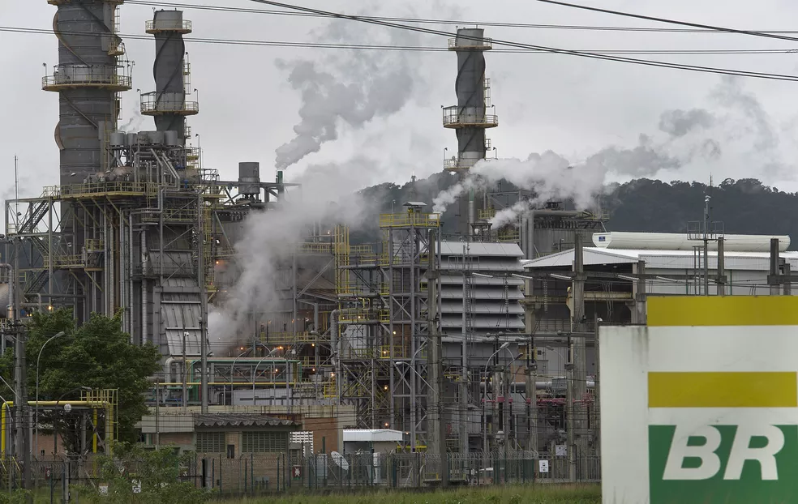

Principais causas.


De modo mais geral, podemos afirmar que solventes, detergentes, lâmpadas fluorescentes, componentes eletrônicos, tintas, gasolina, diesel e óleos automotivos, bem como fluídos hidráulicos, hidrocarbonetos e o chumbo são os principais agentes poluidores do solo.
Sabemos, ainda, que o condicionamento inadequado do lixo doméstico, esgoto e resíduos sólidos industriais degradam a superfície, além de produzirem gases tóxicos e chuva ácida (a qual também se infiltra no solo).
Poluições causada por iniciativas privadas no brasil.
Cinquenta das 500 maiores companhias do mundo cotadas na bolsa são responsáveis por liberar na atmosfera quase 75% das emissões de gases de efeito estufa do planeta.
O Brasil tem duas empresas na lista das maiores poluidoras: a Petrobras, no setor de energia, e a Vale, no setor de materiais, destaca o documento da Carbon Disclosure Project (CDP), uma organização independente especializada no reporte climático das empresas.
Refinaria da Petrobras é multada em R$ 350 mil por poluição em Cubatão, SP